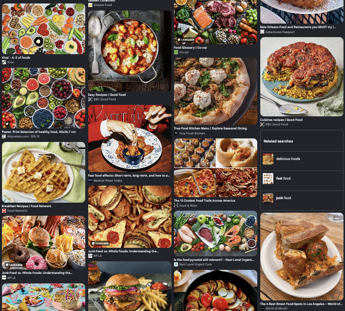

about me
hello. i am a dog and i live with some humans. the humans make
food and then they feed me brown pellets. it makes me sad.
maybe if your humans are nicer then mine then maybe
they will make these recipes for you. good luck
recipes
